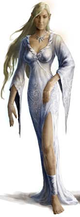

Places
People
Groups
Information not
revealed until later

Jalissa is a pretty acolyte of Ioun and an alchemist in Brindol who was kidnapped by Sinruth.
Traumatized by the experience, she bonded instantly with her rescuer: Richard D'Eversholt.
They quickly grew close, married, and convinced Richard to retire from adventuring. Last time
the Dusk Wardens saw her she was pregnant with Richard's child.